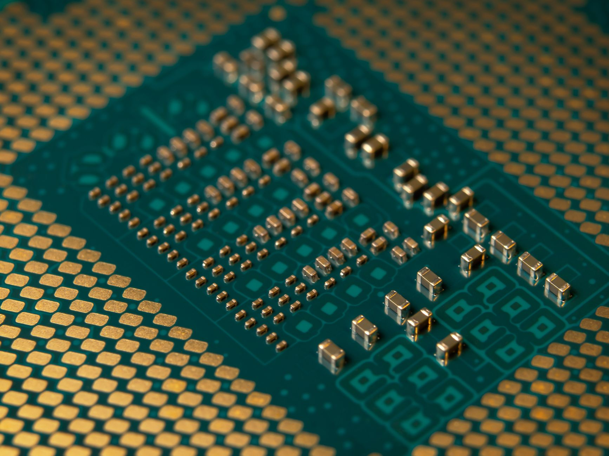

미중 기술빗장 지속, K반도체 안도·압박 동시

2025년 미중 정상회담에서 엔비디아 AI 반도체의 중국 수출 재개와 양국 반도체 협력은 다시 합의 없이 종료됐다. 트럼프 행정부는 H100 이상 성능 AI 반도체의 제3국 포함 수출에 미국 사전 허가를 의무화하는 방안을 공식 추진 중이며, 현재 40여 개국이 허가 필요 대상에 포함되어 있다.
미국 수출통제(EAR) 체계 아래 중국의 HBM 독자 개발은 최소 3~5년 지연된 것으로 전문가들은 추산한다. 이 공백이 삼성전자·SK하이닉스가 HBM 시장을 양분하는 구조를 유지시키는 핵심 배경이다. SK하이닉스는 엔비디아 HBM3E 납품 점유율 약 50%를 유지하고 있으며, 삼성전자는 HBM4 퀄 통과를 목표로 하고 있다.
트럼프 행정부의 AI 반도체 수출허가 의무화가 확대되면, 삼성·SK하이닉스가 엔비디아 외 제3국 AI 기업에 HBM을 납품할 때도 미국 허가 체계의 적용을 받을 가능성이 있다. 기술 독립이 아닌 '미국 공급망 안에서의 수혜'라는 구조적 한계다.
중국은 갈륨·게르마늄·안티몬 수출통제로 반격을 이어가고 있다. 한국의 SiC·GaN·광학 소재 조달 원가를 직접 올리는 방향으로 작동하며, 미국이 위쪽에서 수출 허가 체계를 조이고 중국이 아래쪽에서 소재 공급을 조이는 '위아래 이중 압박' 구조가 형성되고 있다.
미중 기술전쟁의 수혜자로 한국이 자주 거론되지만, 그 수혜는 수동적이고 조건부다. 중국 추격이 지연되는 한에서만 한국의 현재 기술 위치가 유지된다. 미중 완화 또는 중국의 독자 돌파 시점이 오면 3~5년 안에 격차가 급격히 압축될 수 있다는 경고가 반복되는 이유다.
안도와 이중압박이 동시에 작동하는 구조에서 한국이 실질적으로 취해야 할 행동은 수혜를 즐기는 것이 아니라 미중 어느 쪽도 단독으로 통제할 수 없는 기술·소재 영역을 확보하는 것이다. 소재 자급화, 공정 기술 독점화, 수출 다변화가 동시에 필요한 이유다.
현 구도에서 가장 직접적 수혜는 SK하이닉스와 삼성전자다. HBM 시장에서 중국 경쟁자가 없는 상황이 적어도 2027년까지 유지된다면, 두 기업의 HBM 합산 점유율 90% 이상 구조가 그대로 이어진다. 엔비디아 Blackwell·Rubin 아키텍처가 HBM4·HBM4E를 요구하는 시점에서 이 독점 구조는 가격 협상력으로 직결된다.
국내 소재 분야에서는 첨단 반도체 공정 세정·식각 소재를 공급하는 솔브레인·동진쎄미켐이 중국 팹 제약으로 인한 수요 집중 수혜를 받는다. 미국 CHIPS Act로 설립되는 미국 내 팹에도 한국 소재 기업이 납품할 가능성이 열려 있다.
중국 팹 납품 비중이 높은 한국 장비·소재 기업들이 수출통제 강화의 직격탄을 맞는다. 원익IPS·주성엔지니어링 등 장비 기업의 중국 매출 비중은 2022년 기준 30~40%에 달했으며, 통제 강화로 이 매출이 대체 시장 없이 감소할 위험이 있다.
미국의 수출허가 의무화가 제3국까지 확대되면, 한국 기업이 인도·중동 등 신흥국 AI 고객사에 HBM을 납품하는 데도 미국 사전 승인이 필요해진다. 수주-납품 리드타임이 늘어나고 거래 불확실성이 높아져 신흥 AI 시장 진입 속도를 늦추는 역효과로 작용할 수 있다.
투자자 관점에서 '미중 기술 빗장 지속 = 한국 수혜' 공식은 2027년까지는 유효하지만, 그 이후 중국의 기술 추격 속도를 독립 변수로 별도 점검해야 한다. 삼성·SK하이닉스 외에 소재 자급화로 포지션을 강화하는 기업(고려아연·솔브레인·동진쎄미켐)을 병행 모니터링하는 포트폴리오 구성이 유효하다.
기업 전략 담당자라면 미국 수출허가 의무화가 언제, 어떤 범위로 확대될지를 트래킹하는 것이 긴급 과제다. BIS(미국 상무부 산업안보국) 규정 개정 일정을 분기별로 확인하고, 주요 거래처 국가별 허가 필요 여부를 법무팀과 사전 정리해둬야 한다.
실제 조달 현장에서는 — 미국 수출허가 체계 확대 이후 한국 소재 기업이 해외 팹에 납품할 때 '미국산 기술 비율(US-origin content)' 계산을 요청받는 사례가 늘고 있다. 소재 성분·공정에 미국산 IP나 장비가 일부라도 포함되어 있으면 EAR 적용 여부를 사전에 확인해야 하며, 이를 건너뛰면 납품 지연이 아니라 법적 제재 리스크로 이어진다.
이 포스팅은 쿠팡 파트너스 활동의 일환으로 수수료를 제공받습니다.